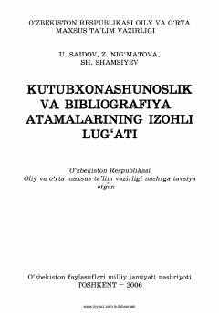

KVKutubxonashunoslik va bibliografiya sohasidagi atamalarning izohli lug'ati.
Ushbu lug'at kutubxonashunoslik va bibliografiya sohasidagi zamonaviy atamalarning izohlarini o'z ichiga oladi. Kitob soha xodimlari, talabalar va o'qituvchilar uchun amaliy qo'llanma sifatida mo'ljallangan.